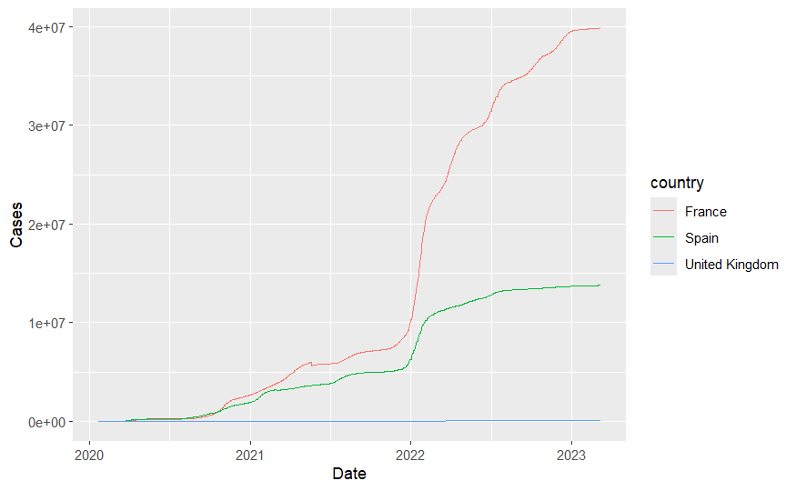
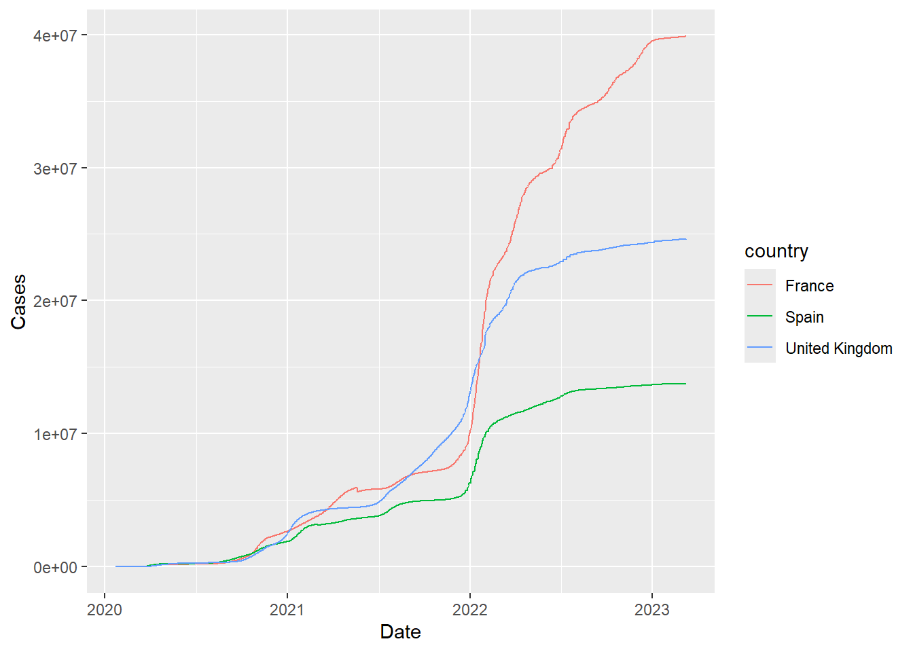

Warning in dir.create("raw_data"): 'raw_data' already existsAlways check your input data
Overview
Why you always check your input data before starting
A cautionary tale
As part of creating this website I decided to revise and re-compile Part 3 of my introductory R series. I had to take a long train journey (this will become relevant later…) and it seemed like an ideal time to do so. I have used the materials numerous times before, and am following best-practices such as keeping my code under version control, using quarto for reproducible documentation, but yet one of the plots just didn’t look right.
Here I am supposed to be plotting the number of COVID cases over time for a number of countries. It probably won’t take long to spot that the line for United Kingdom shows an extremely small number of cases - which certainly isn’t true. I was running the same code I had done countless times before, so what could the problem be? It should be noted that at no point did RStudio show any error messages, so as far as R was concerned it what behaving perfectly well.

Overview of the code
The code chunk below takes a time series dataset of covid cases worldwide and applies some essential data cleaning transformations. These ensure that the data are in a “tidy” format expected by ggplot2 and convert the dates into an international standards. Furthermore, some countries are represented by multiple regions and for simplicity we add these case numbers together.
library(readr)
library(dplyr)
Attaching package: 'dplyr'The following objects are masked from 'package:stats':
filter, lagThe following objects are masked from 'package:base':
intersect, setdiff, setequal, unionlibrary(ggplot2)
library(tidyr)
covid <- read_csv("raw_data/time_series_covid19_confirmed_global.csv") %>%
rename(country = `Country/Region`) %>%
pivot_longer(5:last_col(),names_to="Date", values_to="Cases") %>%
mutate(Date=as.Date(Date,"%m/%d/%y")) %>%
group_by(country,Date) %>%
summarise(Cases = sum(Cases))Rows: 289 Columns: 1147── Column specification ────────────────────────────────────────────────────────
Delimiter: ","
chr (2): Province/State, Country/Region
dbl (1145): Lat, Long, 1/22/20, 1/23/20, 1/24/20, 1/25/20, 1/26/20, 1/27/20,...
ℹ Use `spec()` to retrieve the full column specification for this data.
ℹ Specify the column types or set `show_col_types = FALSE` to quiet this message.
`summarise()` has grouped output by 'country'. You can override using the `.groups` argument.head(covid)# A tibble: 6 × 3
# Groups: country [1]
country Date Cases
<chr> <date> <dbl>
1 Afghanistan 2020-01-22 0
2 Afghanistan 2020-01-23 0
3 Afghanistan 2020-01-24 0
4 Afghanistan 2020-01-25 0
5 Afghanistan 2020-01-26 0
6 Afghanistan 2020-01-27 0The plot is now a standard application of the ggplot function
filter(covid, country %in% c("United Kingdom","France","Spain")) %>%
ggplot(aes(x = Date, y = Cases,col=country)) + geom_line()
But the plot is now looking as expected - with United Kingdom showing high numbers of cases. So what could have happened to produce the top of the page? I neglected to explain that the source data come from a github page are were downloaded as part of my code. In the training materials this was intended to show a workflow that started from data located at a remote source. The code below first creates a raw_data folder (without complaining if such a folder already exists - showWarnings=FALSE) and then checks via file.exists if time_series_covid19_confirmed_global.csv is already present. If not, the code will download from github.
dir.create("raw_data", showWarnings = FALSE)
if(!file.exists("raw_data/time_series_covid19_confirmed_global.csv")){
download.file("https://raw.githubusercontent.com/CSSEGISandData/COVID-19/master/csse_covid_19_data/csse_covid_19_time_series/time_series_covid19_confirmed_global.csv",destfile = "raw_data/time_series_covid19_confirmed_global.csv")
}What should happen, and missing from the workshop materials, is to perform some basic checks on the dimensions of the data once imported into R and stored as a tibble. 🤦
covid <- read_csv("raw_data/time_series_covid19_confirmed_global.csv")Rows: 289 Columns: 1147
── Column specification ────────────────────────────────────────────────────────
Delimiter: ","
chr (2): Province/State, Country/Region
dbl (1145): Lat, Long, 1/22/20, 1/23/20, 1/24/20, 1/25/20, 1/26/20, 1/27/20,...
ℹ Use `spec()` to retrieve the full column specification for this data.
ℹ Specify the column types or set `show_col_types = FALSE` to quiet this message.Checking the dimensions will print the number of rows and columns
dim(covid)[1] 289 1147The head function is a classic function for printing the first six rows (adjustable using the n argument)
head(covid)# A tibble: 6 × 1,147
`Province/State` `Country/Region` Lat Long `1/22/20` `1/23/20` `1/24/20`
<chr> <chr> <dbl> <dbl> <dbl> <dbl> <dbl>
1 <NA> Afghanistan 33.9 67.7 0 0 0
2 <NA> Albania 41.2 20.2 0 0 0
3 <NA> Algeria 28.0 1.66 0 0 0
4 <NA> Andorra 42.5 1.52 0 0 0
5 <NA> Angola -11.2 17.9 0 0 0
6 <NA> Antarctica -71.9 23.3 0 0 0
# ℹ 1,140 more variables: `1/25/20` <dbl>, `1/26/20` <dbl>, `1/27/20` <dbl>,
# `1/28/20` <dbl>, `1/29/20` <dbl>, `1/30/20` <dbl>, `1/31/20` <dbl>,
# `2/1/20` <dbl>, `2/2/20` <dbl>, `2/3/20` <dbl>, `2/4/20` <dbl>,
# `2/5/20` <dbl>, `2/6/20` <dbl>, `2/7/20` <dbl>, `2/8/20` <dbl>,
# `2/9/20` <dbl>, `2/10/20` <dbl>, `2/11/20` <dbl>, `2/12/20` <dbl>,
# `2/13/20` <dbl>, `2/14/20` <dbl>, `2/15/20` <dbl>, `2/16/20` <dbl>,
# `2/17/20` <dbl>, `2/18/20` <dbl>, `2/19/20` <dbl>, `2/20/20` <dbl>, …Similarly, tail will show the last rows in the data
tail(covid)# A tibble: 6 × 1,147
`Province/State` `Country/Region` Lat Long `1/22/20` `1/23/20` `1/24/20`
<chr> <chr> <dbl> <dbl> <dbl> <dbl> <dbl>
1 <NA> Vietnam 14.1 108. 0 2 2
2 <NA> West Bank and Gaza 32.0 35.2 0 0 0
3 <NA> Winter Olympics 20… 39.9 116. 0 0 0
4 <NA> Yemen 15.6 48.5 0 0 0
5 <NA> Zambia -13.1 27.8 0 0 0
6 <NA> Zimbabwe -19.0 29.2 0 0 0
# ℹ 1,140 more variables: `1/25/20` <dbl>, `1/26/20` <dbl>, `1/27/20` <dbl>,
# `1/28/20` <dbl>, `1/29/20` <dbl>, `1/30/20` <dbl>, `1/31/20` <dbl>,
# `2/1/20` <dbl>, `2/2/20` <dbl>, `2/3/20` <dbl>, `2/4/20` <dbl>,
# `2/5/20` <dbl>, `2/6/20` <dbl>, `2/7/20` <dbl>, `2/8/20` <dbl>,
# `2/9/20` <dbl>, `2/10/20` <dbl>, `2/11/20` <dbl>, `2/12/20` <dbl>,
# `2/13/20` <dbl>, `2/14/20` <dbl>, `2/15/20` <dbl>, `2/16/20` <dbl>,
# `2/17/20` <dbl>, `2/18/20` <dbl>, `2/19/20` <dbl>, `2/20/20` <dbl>, …I saved a copy of the csv file that was downloaded during the same session that created the erroneous covid line plot.
covid_bad <- read_csv("time_series_covid19_confirmed_global_BAD.csv")Rows: 270 Columns: 1147
── Column specification ────────────────────────────────────────────────────────
Delimiter: ","
chr (2): Province/State, Country/Region
dbl (1145): Lat, Long, 1/22/20, 1/23/20, 1/24/20, 1/25/20, 1/26/20, 1/27/20,...
ℹ Use `spec()` to retrieve the full column specification for this data.
ℹ Specify the column types or set `show_col_types = FALSE` to quiet this message.The first rows of the tibble look to be the same
head(covid)# A tibble: 6 × 1,147
`Province/State` `Country/Region` Lat Long `1/22/20` `1/23/20` `1/24/20`
<chr> <chr> <dbl> <dbl> <dbl> <dbl> <dbl>
1 <NA> Afghanistan 33.9 67.7 0 0 0
2 <NA> Albania 41.2 20.2 0 0 0
3 <NA> Algeria 28.0 1.66 0 0 0
4 <NA> Andorra 42.5 1.52 0 0 0
5 <NA> Angola -11.2 17.9 0 0 0
6 <NA> Antarctica -71.9 23.3 0 0 0
# ℹ 1,140 more variables: `1/25/20` <dbl>, `1/26/20` <dbl>, `1/27/20` <dbl>,
# `1/28/20` <dbl>, `1/29/20` <dbl>, `1/30/20` <dbl>, `1/31/20` <dbl>,
# `2/1/20` <dbl>, `2/2/20` <dbl>, `2/3/20` <dbl>, `2/4/20` <dbl>,
# `2/5/20` <dbl>, `2/6/20` <dbl>, `2/7/20` <dbl>, `2/8/20` <dbl>,
# `2/9/20` <dbl>, `2/10/20` <dbl>, `2/11/20` <dbl>, `2/12/20` <dbl>,
# `2/13/20` <dbl>, `2/14/20` <dbl>, `2/15/20` <dbl>, `2/16/20` <dbl>,
# `2/17/20` <dbl>, `2/18/20` <dbl>, `2/19/20` <dbl>, `2/20/20` <dbl>, …But clearly there are fewer rows
dim(covid_bad)[1] 270 1147And the last rows of the tibble are not the same as the complete dataset.
tail(covid_bad)# A tibble: 6 × 1,147
`Province/State` `Country/Region` Lat Long `1/22/20` `1/23/20` `1/24/20`
<chr> <chr> <dbl> <dbl> <dbl> <dbl> <dbl>
1 Anguilla United Kingdom 18.2 -63.1 0 0 0
2 Bermuda United Kingdom 32.3 -64.8 0 0 0
3 British Virgin Is… United Kingdom 18.4 -64.6 0 0 0
4 Cayman Islands United Kingdom 19.3 -81.3 0 0 0
5 Channel Islands United Kingdom 49.4 -2.36 0 0 0
6 Falkland Islands … United Kingdom -51.8 -59.5 0 0 0
# ℹ 1,140 more variables: `1/25/20` <dbl>, `1/26/20` <dbl>, `1/27/20` <dbl>,
# `1/28/20` <dbl>, `1/29/20` <dbl>, `1/30/20` <dbl>, `1/31/20` <dbl>,
# `2/1/20` <dbl>, `2/2/20` <dbl>, `2/3/20` <dbl>, `2/4/20` <dbl>,
# `2/5/20` <dbl>, `2/6/20` <dbl>, `2/7/20` <dbl>, `2/8/20` <dbl>,
# `2/9/20` <dbl>, `2/10/20` <dbl>, `2/11/20` <dbl>, `2/12/20` <dbl>,
# `2/13/20` <dbl>, `2/14/20` <dbl>, `2/15/20` <dbl>, `2/16/20` <dbl>,
# `2/17/20` <dbl>, `2/18/20` <dbl>, `2/19/20` <dbl>, `2/20/20` <dbl>, …What is incredibly unlucky in my case was that not all of the United Kingdom rows are present in the shorter dataset.
filter(covid, `Country/Region` == "United Kingdom")# A tibble: 15 × 1,147
`Province/State` `Country/Region` Lat Long `1/22/20` `1/23/20`
<chr> <chr> <dbl> <dbl> <dbl> <dbl>
1 Anguilla United Kingdom 18.2 -63.1 0 0
2 Bermuda United Kingdom 32.3 -64.8 0 0
3 British Virgin Islands United Kingdom 18.4 -64.6 0 0
4 Cayman Islands United Kingdom 19.3 -81.3 0 0
5 Channel Islands United Kingdom 49.4 -2.36 0 0
6 Falkland Islands (Malvin… United Kingdom -51.8 -59.5 0 0
7 Gibraltar United Kingdom 36.1 -5.35 0 0
8 Guernsey United Kingdom 49.4 -2.59 0 0
9 Isle of Man United Kingdom 54.2 -4.55 0 0
10 Jersey United Kingdom 49.2 -2.14 0 0
11 Montserrat United Kingdom 16.7 -62.2 0 0
12 Pitcairn Islands United Kingdom -24.4 -128. 0 0
13 Saint Helena, Ascension … United Kingdom -7.95 -14.4 0 0
14 Turks and Caicos Islands United Kingdom 21.7 -71.8 0 0
15 <NA> United Kingdom 55.4 -3.44 0 0
# ℹ 1,141 more variables: `1/24/20` <dbl>, `1/25/20` <dbl>, `1/26/20` <dbl>,
# `1/27/20` <dbl>, `1/28/20` <dbl>, `1/29/20` <dbl>, `1/30/20` <dbl>,
# `1/31/20` <dbl>, `2/1/20` <dbl>, `2/2/20` <dbl>, `2/3/20` <dbl>,
# `2/4/20` <dbl>, `2/5/20` <dbl>, `2/6/20` <dbl>, `2/7/20` <dbl>,
# `2/8/20` <dbl>, `2/9/20` <dbl>, `2/10/20` <dbl>, `2/11/20` <dbl>,
# `2/12/20` <dbl>, `2/13/20` <dbl>, `2/14/20` <dbl>, `2/15/20` <dbl>,
# `2/16/20` <dbl>, `2/17/20` <dbl>, `2/18/20` <dbl>, `2/19/20` <dbl>, …Here are the rows for United Kingdom in the truncated data
filter(covid_bad, `Country/Region` == "United Kingdom")# A tibble: 6 × 1,147
`Province/State` `Country/Region` Lat Long `1/22/20` `1/23/20` `1/24/20`
<chr> <chr> <dbl> <dbl> <dbl> <dbl> <dbl>
1 Anguilla United Kingdom 18.2 -63.1 0 0 0
2 Bermuda United Kingdom 32.3 -64.8 0 0 0
3 British Virgin Is… United Kingdom 18.4 -64.6 0 0 0
4 Cayman Islands United Kingdom 19.3 -81.3 0 0 0
5 Channel Islands United Kingdom 49.4 -2.36 0 0 0
6 Falkland Islands … United Kingdom -51.8 -59.5 0 0 0
# ℹ 1,140 more variables: `1/25/20` <dbl>, `1/26/20` <dbl>, `1/27/20` <dbl>,
# `1/28/20` <dbl>, `1/29/20` <dbl>, `1/30/20` <dbl>, `1/31/20` <dbl>,
# `2/1/20` <dbl>, `2/2/20` <dbl>, `2/3/20` <dbl>, `2/4/20` <dbl>,
# `2/5/20` <dbl>, `2/6/20` <dbl>, `2/7/20` <dbl>, `2/8/20` <dbl>,
# `2/9/20` <dbl>, `2/10/20` <dbl>, `2/11/20` <dbl>, `2/12/20` <dbl>,
# `2/13/20` <dbl>, `2/14/20` <dbl>, `2/15/20` <dbl>, `2/16/20` <dbl>,
# `2/17/20` <dbl>, `2/18/20` <dbl>, `2/19/20` <dbl>, `2/20/20` <dbl>, …What’s worse is that the row containing the covid cases for mainland Uk are only present in the full dataset. This is where most of the cases occur.
filter(covid, `Country/Region` == "United Kingdom", is.na(`Province/State`))# A tibble: 1 × 1,147
`Province/State` `Country/Region` Lat Long `1/22/20` `1/23/20` `1/24/20`
<chr> <chr> <dbl> <dbl> <dbl> <dbl> <dbl>
1 <NA> United Kingdom 55.4 -3.44 0 0 0
# ℹ 1,140 more variables: `1/25/20` <dbl>, `1/26/20` <dbl>, `1/27/20` <dbl>,
# `1/28/20` <dbl>, `1/29/20` <dbl>, `1/30/20` <dbl>, `1/31/20` <dbl>,
# `2/1/20` <dbl>, `2/2/20` <dbl>, `2/3/20` <dbl>, `2/4/20` <dbl>,
# `2/5/20` <dbl>, `2/6/20` <dbl>, `2/7/20` <dbl>, `2/8/20` <dbl>,
# `2/9/20` <dbl>, `2/10/20` <dbl>, `2/11/20` <dbl>, `2/12/20` <dbl>,
# `2/13/20` <dbl>, `2/14/20` <dbl>, `2/15/20` <dbl>, `2/16/20` <dbl>,
# `2/17/20` <dbl>, `2/18/20` <dbl>, `2/19/20` <dbl>, `2/20/20` <dbl>, …filter(covid_bad, `Country/Region` == "United Kingdom", is.na(`Province/State`))# A tibble: 0 × 1,147
# ℹ 1,147 variables: Province/State <chr>, Country/Region <chr>, Lat <dbl>,
# Long <dbl>, 1/22/20 <dbl>, 1/23/20 <dbl>, 1/24/20 <dbl>, 1/25/20 <dbl>,
# 1/26/20 <dbl>, 1/27/20 <dbl>, 1/28/20 <dbl>, 1/29/20 <dbl>, 1/30/20 <dbl>,
# 1/31/20 <dbl>, 2/1/20 <dbl>, 2/2/20 <dbl>, 2/3/20 <dbl>, 2/4/20 <dbl>,
# 2/5/20 <dbl>, 2/6/20 <dbl>, 2/7/20 <dbl>, 2/8/20 <dbl>, 2/9/20 <dbl>,
# 2/10/20 <dbl>, 2/11/20 <dbl>, 2/12/20 <dbl>, 2/13/20 <dbl>, 2/14/20 <dbl>,
# 2/15/20 <dbl>, 2/16/20 <dbl>, 2/17/20 <dbl>, 2/18/20 <dbl>, …We can filter the data for United Kingdom and use select to show the last column. The helper function last_col() is incredibly useful for this as we don’t need to know the name of the column. Using summarise we can add all the values in the column. This is the cumulative number of casees at the last date in the dataset. Dividing by one million (1e6) makes the numbers a bit easier to read.
filter(covid, `Country/Region` == "United Kingdom") %>%
select(last_col()) %>%
summarise(sum(.) / 1e6)# A tibble: 1 × 1
`sum(.)/1e+06`
<dbl>
1 24.7For the truncated dataset, the number of counts is substantially lower as we are missing the mainland Uk data. So it is not surprisingly that the trend lines for the Uk did not look correct.
filter(covid_bad, `Country/Region` == "United Kingdom") %>%
select(last_col()) %>%
summarise(sum(.))# A tibble: 1 × 1
`sum(.)`
<dbl>
1 63439In this particular instance I think my poor internet connection on the train wi-fi must have caused me to not download the complete file. Since no errors were produced I might not have detected the problem if I wasn’t trying to visualise data for United Kingdom which happened to be located towards the bottom of the file.
Checking the dimensions of the tibble help to diagnose the problem, but there are couple of other techniques. R has an in-built function to check the size of a file.
file.size("raw_data/time_series_covid19_confirmed_global.csv")[1] 1820194file.size("time_series_covid19_confirmed_global_BAD.csv")[1] 1714255A bit more rigourous is to calculate a checksum. In short, this is a calculated value that represents the exact contents of a file. If the file changes — even by a single byte — the checksum changes as well. That’s why it’s often described as a “digital fingerprint” for data integrity. This can be done in R by first loading the tools library and using the md5sum function.
# Load the tools package
library(tools)
# Compute MD5 checksum for a file
file_path <- "path/to/your/file.txt"
checksum <- md5sum("raw_data/time_series_covid19_confirmed_global.csv")
checksumraw_data/time_series_covid19_confirmed_global.csv
"095dfec62d4981a32630bed5094296f7" checksum_bad <- md5sum("time_series_covid19_confirmed_global_BAD.csv")
checksum_badtime_series_covid19_confirmed_global_BAD.csv
"179af9d326d1c9451c49e5d9821c85e0" In practice if someone is sending data you large, especially if the file is large, they will also send a file containing checksums for you to check data integrity. The following would print TRUE if both files had exactly the same contents.
checksum == checksum_badraw_data/time_series_covid19_confirmed_global.csv
FALSE Conclusion
So I should have checked the input data more thoroughly before plotting. Thankfully it was an example for a workshop, but even so I should be demonstrating best practices. I was particularly unlucky that the data stopped halfway through the particular subset I was trying to plot.
There are other ways of checking that your outputs are correct involving something called “unit tests”, which are primarily used during software development but could also be useful in this context. I may just talk about these in the future.
list.files("raw_data/")[1] "time_series_covid19_confirmed_global.csv"